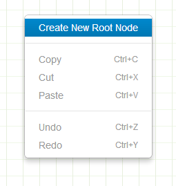
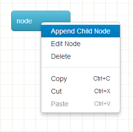
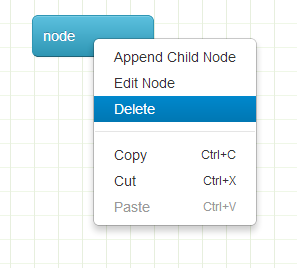
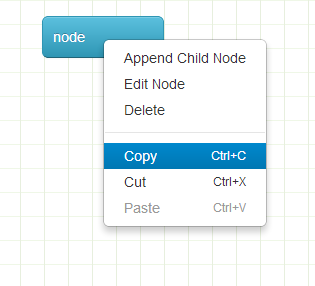
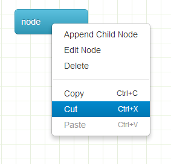
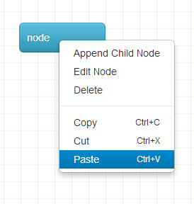

MindMap帮助文档
node操作
-
选中节点：左键单击节点
-
nodeContextMenu：右键单击节点
-
修改节点位置：左键点击节点不松，拖动鼠标
-
修改节点内容：nodeContextMenu-〉edit

-
创建根节点：contextMenu-〉Creat New Root Node

-
添加子节点：nodeContextmenu-> Append Child Node

-
删除节点：nodeContextMenu-〉Delete

-
复制节点：选中节点-〉（点击右键-〉Copy）或者（file-〉Copy） 或者使用快捷键[ctrl+c]

-
剪切节点：选中节点-〉（点击右键-〉cut）或者（file-〉cut） 或者使用快捷键[ctrl+x]

-
粘贴节点：选中节点-〉（点击右键-〉Paste）或者（file-〉Paste） 或者使用快捷键[ctrl+v]
